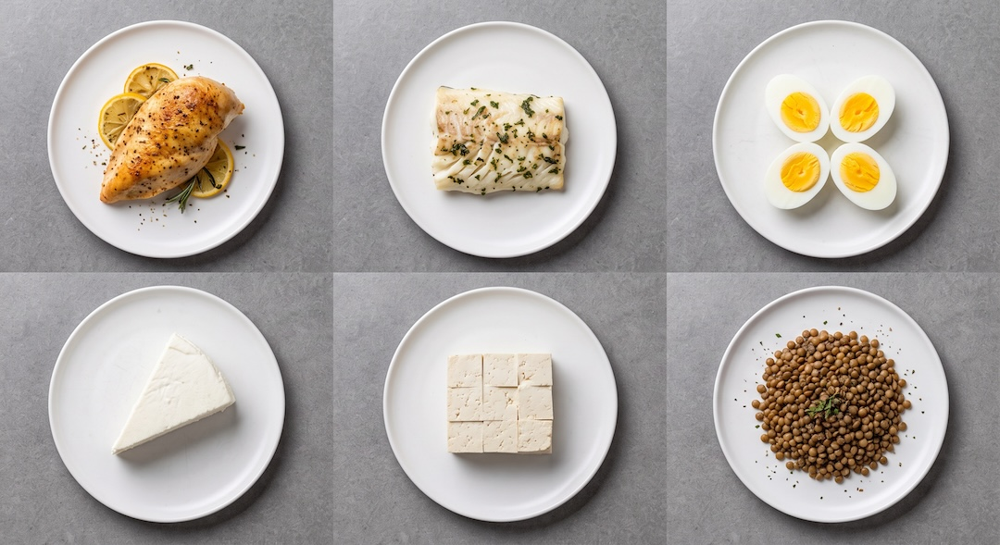
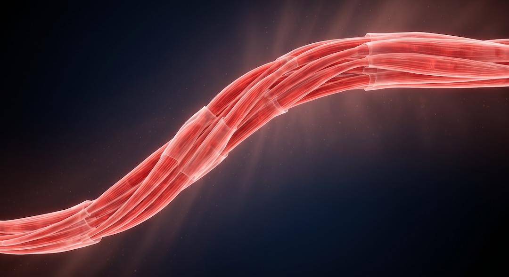
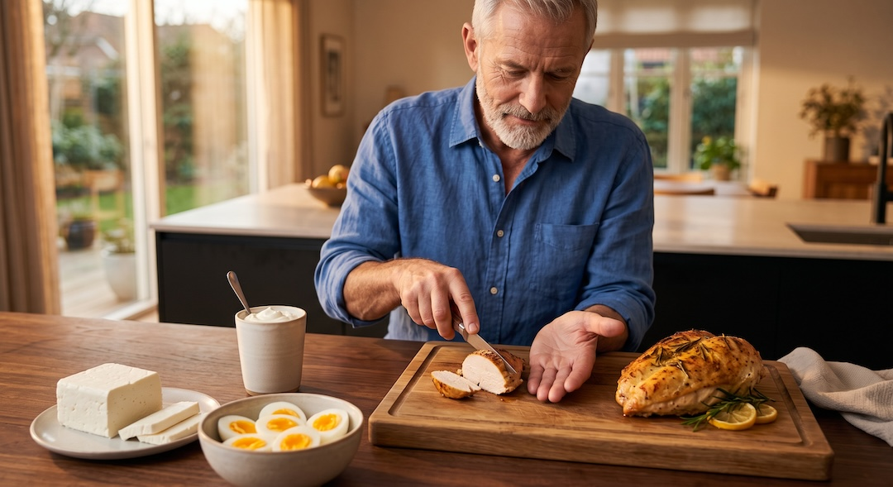
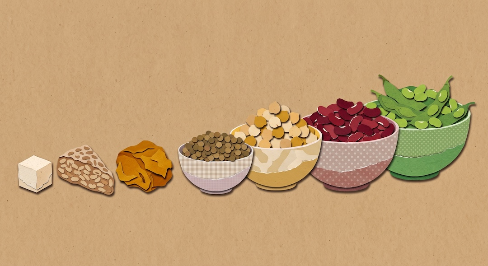
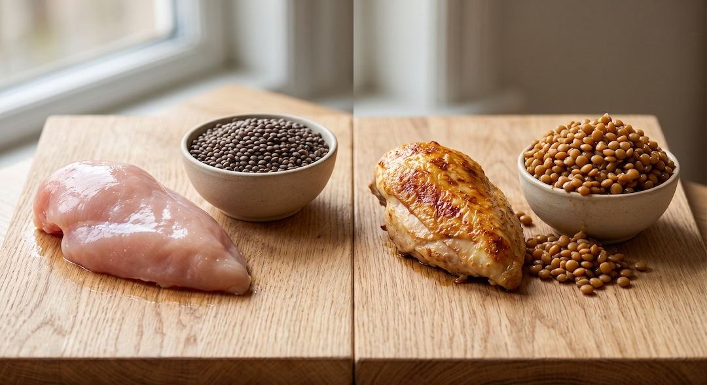
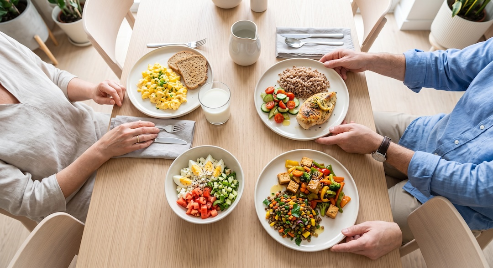
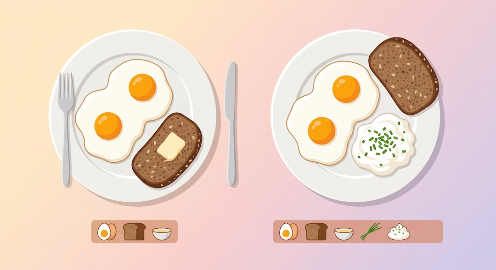
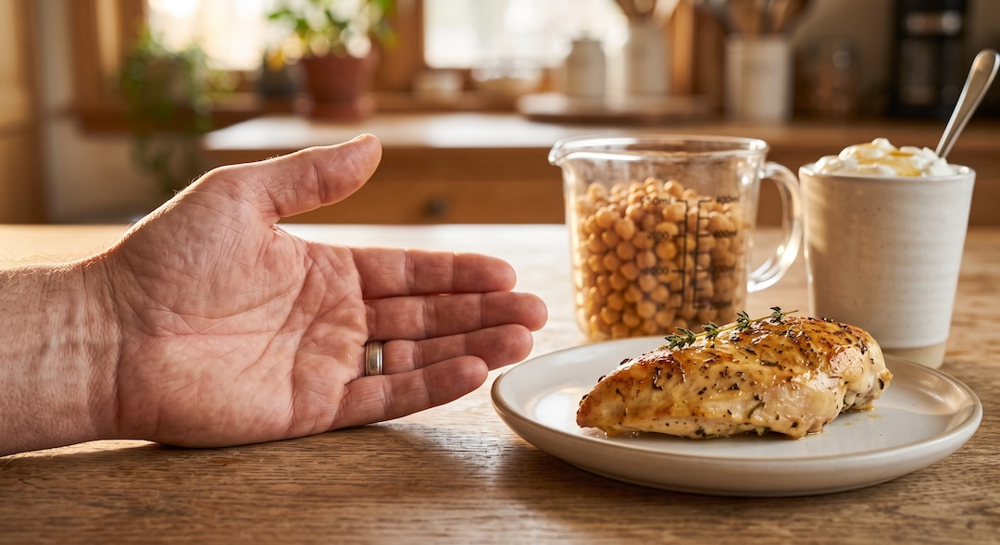

Dwa jajka dostarczają około 12–13 g białka, więc same zwykle nie tworzą posiłku z 25–30 g. Ile potrzeba kurczaka, twarogu, soczewicy albo tofu? Ten tekst pokazuje porcje w gramach i na zwykłym talerzu, wyjaśnia różnicę między masą surową a gotową oraz podaje proste zestawy, które można odtworzyć bez codziennego liczenia.
Szybka odpowiedź
Około 25–30 g białka daje 80–100 g pieczonej piersi z kurczaka, 115–135 g pieczonego łososia, 4–5 jajek, 160–190 g twarogu zawierającego 16 g białka w 100 g, 210–250 g skyru albo 280–330 g ugotowanej soczewicy. To wartości orientacyjne: sprawdź etykietę i zwróć uwagę, czy ważysz produkt przed, czy po obróbce.
Kluczowe wnioski
- Porcja zależy od produktu: około 90 g pieczonego kurczaka może dostarczyć podobną ilość białka co 4–5 jajek, około 180 g twarogu albo duża porcja ugotowanej soczewicy.
- Masa surowa i masa po obróbce nie są zamienne: mięso podczas pieczenia traci wodę, a strączki podczas gotowania ją chłoną.
- 25–30 g w posiłku to praktyczny punkt odniesienia, a nie obowiązek ani górny limit przyswajania białka.
- Przy twarogu, tofu, skyrach i innych produktach pakowanych sprawdź białko w 100 g na etykiecie, bo receptury i gramatury różnią się między produktami.
Ile produktu daje około 25–30 g białka?
Najkrócej: około 80–100 g pieczonej piersi z kurczaka, 115–135 g pieczonego łososia, 4–5 jajek, 160–190 g twarogu z 16 g białka w 100 g, 210–250 g skyru lub 280–330 g ugotowanej soczewicy daje mniej więcej 25–30 g białka. Dokładna porcja zależy od produktu i sposobu przygotowania.
Liczby dotyczą określonej postaci produktu: mięsa i ryby po obróbce, strączków po ugotowaniu i odsączeniu, a nabiału prosto z opakowania. Wartości są orientacyjne, ponieważ zmieniają się wraz z zawartością wody i recepturą. Przy produktach pakowanych etykieta jest ważniejsza niż uśredniona tabela.
- Kurczak lub indyk: zwykle około 85–100 g po upieczeniu; traktuj wielkość dłoni jedynie jako wskazówkę i raz porównaj ją z wagą.
- Łosoś, dorsz lub chuda wieprzowina: zwykle około 100–135 g po obróbce, zależnie od produktu.
- Jajka: 4–5 sztuk; twaróg Piątnicy z 16 g białka w 100 g: około 160–190 g; skyr z 12 g w 100 g: około 210–250 g.
- Tofu twarde: porcja wynika z etykiety; tempeh: około 125–150 g; ugotowane strączki: zwykle duża porcja, dlatego łatwiej łączyć je z tofu.

Skąd wzięło się 25–30 g i czy to obowiązuje każdego?
Zakres 25–30 g jest praktycznym punktem odniesienia, a nie prawem fizjologii. Stanowisko PROT-AGE zaproponowało osobom starszym podobną ilość wysokiej jakości białka w głównych posiłkach jako jeden ze sposobów rozłożenia dziennej podaży. Posiłek z mniejszą ilością białka nie staje się przez to bezwartościowy.
Analiza Moore’a i współpracowników objęła zdrowych starszych mężczyzn, średnio około 71 lat. W tej grupie odpowiedź syntezy białek mięśniowych osiągała punkt załamania przy około 0,40 g białka na kilogram masy ciała. To odpowiada około 24 g przy masie 60 kg i około 36 g przy masie 90 kg, ale wynik nie jest osobistą receptą dla każdego.
Zakres 25–30 g nie jest także granicą wchłaniania. W badaniu Trommelena z 2023 roku młodzi, wytrenowani mężczyźni po wysiłku otrzymali 25 albo 100 g białka; większa dawka wywołała dłuższą odpowiedź anaboliczną. Tego wyniku nie należy przekładać wprost na codzienny obiad osoby po sześćdziesiątce, ale obala on prostą tezę, że wszystko powyżej 30 g się marnuje.
Liczy się również dzienna suma. ESPEN zaleca osobom starszym co najmniej 1 g białka na kilogram masy ciała dziennie, z dopasowaniem do stanu odżywienia, aktywności, chorób i tolerancji. Trzy posiłki po 25–30 g dają 75–90 g. To może pasować wielu osobom, lecz nie zastępuje indywidualnej oceny, zwłaszcza przy chorobie lub niedożywieniu. Osobno wyjaśniamy, jak policzyć dzienne zapotrzebowanie na białko po 50-tce.

Produkty zwierzęce: ile ważą porcje z 25–30 g białka?
Poniższa tabela pokazuje, ile trzeba zjeść typowych produktów zwierzęcych, żeby dostać około 25–30 g białka. Wszystkie wartości dla mięsa i ryb dotyczą masy po upieczeniu lub ugotowaniu, bez skóry, panierki i sosu. Nabiał i jajka podano w postaci gotowej do zjedzenia. Liczby pochodzą z amerykańskiej bazy składu żywności USDA oraz z etykiet polskich producentów i są zaokrąglone.
| Produkt i postać | Białko w 100 g (orientacyjnie) | Porcja na około 25–30 g | Domowa miara | Uwaga |
|---|---|---|---|---|
| Pierś z kurczaka bez skóry, pieczona lub grillowana, ważona po obróbce | ok. 31 g | 80–100 g | plaster wielkości dłoni bez palców | Surowa pierś ma ok. 22–23 g w 100 g, więc odpowiada to 110–135 g surowego mięsa. |
| Pierś z indyka bez skóry, pieczona, po obróbce | ok. 30 g | 85–100 g | 3–4 grubsze plastry pieczeni | Wędlina z indyka zawiera więcej wody i soli – sprawdź etykietę. |
| Łosoś hodowlany, pieczony, po obróbce | ok. 22 g | 115–135 g | jeden filet z opakowania (zwykle 120–150 g) | Tłuste ryby mają nieco mniej białka na 100 g niż chude. |
| Dorsz pieczony lub gotowany na parze, po obróbce | ok. 23 g | 110–130 g | średni filet | Dotyczy czystego mięsa, bez panierki. |
| Chuda wieprzowina (polędwiczka, schab bez tłuszczu), pieczona | ok. 26–27 g | 95–115 g | 2 grube plastry | Kotlet w panierce ma inne proporcje: mąka i tłuszcz dodają masy, nie białka. |
| Chuda wołowina (pieczeń lub stek z udźca), grillowana | ok. 30 g | 85–100 g | kawałek wielkości dłoni | Chude mięso mielone (90% mięsa) ma ok. 26 g w 100 g, czyli porcja 95–115 g. |
| Jajko kurze, całe, ugotowane, rozmiar M lub L | ok. 12,5 g, czyli 6–7 g na sztukę | 4–5 sztuk | 4 jajka to ok. 25 g, 5 jajek ok. 31 g | Dwa jajka to ok. 12–13 g, nie 25. |
| Twaróg półtłusty, z opakowania | 16 g na etykiecie wskazanego twarogu Piątnicy | 160–190 g | około trzy czwarte kostki 250 g | Inny produkt może mieć inną wartość, dlatego etykieta rozstrzyga. |
| Serek wiejski, z opakowania | ok. 11 g | 230–270 g | opakowanie 200 g daje ok. 22 g | Wersje wysokobiałkowe mają więcej – sprawdź etykietę. |
| Skyr naturalny lub jogurt wysokobiałkowy, z opakowania | ok. 12 g | 210–250 g | półtora kubka 150 g albo połowa kubka 450 g | Zwykły jogurt naturalny ma tylko ok. 3,5–5 g w 100 g. |
| Mleko 2–3,2%, do picia | ok. 3,3 g w 100 ml | samodzielnie niepraktyczne (750–900 ml) | szklanka 250 ml daje ok. 8 g jako dodatek | Liczy się jako uzupełnienie posiłku, nie jego baza. |
Najprościej odczytywać tabelę w dwóch krokach. Najpierw wybierz konkretny produkt, a potem sprawdź jego etykietę, jeśli ją ma. Dla twarogu użytego w obliczeniu 16 g białka w 100 g oznacza, że 160 g dostarcza około 26 g, a 190 g około 30 g. Przy innym twarogu przelicz porcję z wartości podanej na opakowaniu.

Produkty roślinne: ile ważą porcje z 25–30 g białka?
Przy produktach roślinnych liczby wyglądają inaczej i to jest najważniejsza informacja z tej sekcji. Tofu, tempeh i seitan są w miarę skoncentrowane, ale soczewica, fasola i ciecierzyca po ugotowaniu zawierają dużo wody, więc pojedyncza porcja dająca 25–30 g białka robi się bardzo duża. Dlatego w tabeli jest osobny wiersz z połączeniami.
| Produkt i postać | Białko w 100 g (orientacyjnie) | Porcja na około 25–30 g | Domowa miara | Uwaga |
|---|---|---|---|---|
| Tofu naturalne lub twarde, odsączone | około 10–17 g w rekordach USDA, zależnie od rodzaju tofu | około 150–300 g; policz z etykiety konkretnego tofu | często całe opakowanie; sprawdź jego masę i etykietę | Tofu miękkie i jedwabiste ma znacznie mniej białka. |
| Tempeh, ugotowany lub podsmażony | ok. 20 g | 125–150 g | około trzy czwarte opakowania 200 g | Najbardziej skoncentrowane białko wśród produktów sojowych z tej listy. |
| Soczewica ugotowana, odsączona | ok. 9 g | 280–330 g | około 1,5 szklanki | Sucha soczewica ma na 100 g dużo więcej, ale po ugotowaniu chłonie wodę. |
| Ciecierzyca ugotowana lub z puszki, odsączona | ok. 9 g | 280–340 g | puszka 400 g po odsączeniu (ok. 240 g) daje ok. 21 g | Samodzielnie to bardzo duża porcja; lepiej łączyć. |
| Fasola (czerwona, biała, czarna) ugotowana, odsączona | ok. 8–9 g | 300–350 g | 1,5–2 szklanki | Podobnie jak ciecierzyca: lepiej jako połowa porcji białka. |
| Edamame, ugotowane ziarna bez strąków | ok. 12 g | 210–250 g | około 1,5 szklanki ziaren | Mrożone ziarna są wygodne i mają stabilny skład. |
| Połączenia | – | 150 g soczewicy (ok. 13–14 g) + 100 g tofu (ok. 13 g) = ok. 27 g; 200 g ciecierzycy (ok. 18 g) + 100 g tofu = ok. 31 g | miska strączków plus kostka tofu lub tempehu | W kuchni roślinnej sumowanie dwóch źródeł jest normą, nie wyjątkiem. |
Przy tofu tabela jest wskazówką, ponieważ produkty różnią się zawartością wody i białka. Rekordy USDA dla dwóch rodzajów twardego tofu podają około 10 i 17 g białka w 100 g. Dlatego porcja na 25–30 g może być wyraźnie różna. Sprawdź etykietę i użyj prostego przeliczenia: białko w 100 g pomnóż przez masę porcji i podziel przez 100.

Masa surowa czy po ugotowaniu: której liczby dotyczą tabele?
To najczęstsze źródło pomyłek, więc zasługuje na osobne wyjaśnienie. Obie tabele podają masę produktu w takiej postaci, w jakiej trafia na talerz: mięso i ryby po upieczeniu, strączki po ugotowaniu, nabiał z opakowania. Jeśli ważysz kurczaka na surowo, musisz użyć innej liczby, bo surowe i pieczone mięso to nie ta sama gęstość białka.
Podczas pieczenia z mięsa ucieka część wody, więc białko staje się bardziej skoncentrowane w 100 g gotowego produktu. W FoodData Central surowa pierś z kurczaka bez skóry ma około 22,5 g białka w 100 g, a pieczona około 31 g. Białka nie przybyło: zmniejszyła się masa kawałka. Około 130–135 g surowej piersi dostarcza w przybliżeniu 30 g białka.
Strączki działają odwrotnie. Podczas gotowania chłoną wodę i zwiększają masę, dlatego 100 g ugotowanej soczewicy zawiera około 9 g białka. Nie porównuj tej wartości z tabelą dla suchego ziarna. Ta sama zasada dotyczy ryżu, kaszy i makaronu, choć nie są one głównymi źródłami białka w przedstawionych posiłkach.
Praktyczna zasada brzmi: waż w tej samej postaci, w której podaje tabela lub etykieta. Etykiety pakowanego mięsa dotyczą surowego produktu, więc jeśli kupujesz filet 300 g, to po upieczeniu masz w nim mniej więcej tyle białka, ile wynika z etykiety, tylko w mniejszej masie. Jeśli korzystasz z aplikacji do liczenia, wybieraj pozycję „gotowane” lub „pieczone”, gdy ważysz po obróbce – to jedyny moment, w którym trzeba uważać.

Jak złożyć siedem posiłków z około 25–30 g białka?
Tabele są przydatne, ale posiłek to zwykle kilka składników naraz. Poniżej siedem realnych zestawów z sumą białka około 25–30 g; liczby w nawiasach to orientacyjne wartości z tabel powyżej. Pięć zestawów jest bez mięsa, dwa są w pełni roślinne. Dodatki takie jak kasza, pieczywo, warzywa i tłuszcz dostarczają jeszcze po kilka gramów, których tu nie liczymy.
Każdy zestaw ma wyraźną bazę białkową i ewentualnie dodatek, który uzupełnia brakujące gramy. Jeśli najtrudniej jest rano, zobacz też praktyczny przykład białkowego śniadania. Potraktuj poniższe zestawy jako wzory do zamiany składników, a wartości z etykiet jako ostateczne źródło obliczeń.
- Śniadanie 1: jajecznica z 3 jaj (ok. 19 g) i szklanka mleka lub kakao na mleku 250 ml (ok. 8 g) – razem ok. 27 g. Bez mięsa.
- Śniadanie 2: twaróg półtłusty 150 g ze szczypiorkiem i rzodkiewką (ok. 24 g przy 16 g w 100 g) plus kawa z mlekiem 200 ml (ok. 6–7 g) – razem ok. 30 g. Bez mięsa.
- Obiad 1: pierś z kurczaka pieczona, 100 g po obróbce (ok. 31 g), kasza gryczana i surówka – razem ok. 31 g z samego mięsa.
- Obiad 2: łosoś pieczony, 120 g po obróbce (ok. 26–27 g), ziemniaki i sałata – razem ok. 27 g.
- Kolacja 1: sałatka z 2 jajek na twardo (ok. 12–13 g) i 150 g serka wiejskiego (ok. 16–17 g) z pomidorem – razem ok. 29 g. Bez mięsa.
- Kolacja 2 (w pełni roślinna): tofu naturalne 150 g smażone z warzywami (ok. 20 g przy 13,5 g w 100 g) plus 100 g ugotowanej soczewicy w sałatce (ok. 9 g) – razem ok. 29 g.
- Kolacja 3 (w pełni roślinna): curry z 200 g ugotowanej ciecierzycy (ok. 18 g) i 100 g tofu (ok. 13–14 g) – razem ok. 31 g.

Jakich błędów unikać przy liczeniu białka na talerzu?
Większość błędów w ocenie porcji białka bierze się nie z braku wiedzy, tylko z kilku powtarzalnych skrótów myślowych. Poniżej te, które w praktyce psują rachunek najczęściej. Każdy z nich da się poprawić jednym prostym nawykiem, bez wagi i bez aplikacji.
Dwa jajka dostarczają około 12–13 g białka. Pieczywo może dołożyć kilka gramów, ale taki zestaw zwykle nadal nie osiąga 25–30 g. Trzecie jajko również może nie wystarczyć. Pewniejszym uzupełnieniem będzie na przykład 100 g skyru, 100 g twarogu z 16 g białka w 100 g albo około 120 g serka wiejskiego. Przy zakupach pomaga prosty przewodnik pokazujący, jak czytać etykiety żywności.
- Uznawanie dwóch jajek za 25–30 g białka. Dwa jajka M lub L to około 12–13 g; cztery dają około 25 g, a pięć około 31 g.
- Mylenie masy produktu z ilością białka. W 100 g pieczonej piersi z kurczaka jest około 31 g białka, a w 100 g łososia około 22 g.
- Mieszanie masy surowej z gotową. Użyj wartości dla takiej postaci produktu, jaką rzeczywiście ważysz.
- Zakładanie, że każdy jogurt jest wysokobiałkowy. Sprawdź na etykiecie białko w 100 g i gramaturę kubka.
- Pomijanie białka z dodatków. Nabiał, jajka, tofu lub strączki mogą wspólnie tworzyć porcję, której żaden składnik nie daje sam.
- Traktowanie każdej kostki tofu lub twarogu tak samo. Receptury i gramatury opakowań się różnią, więc najpierw przeczytaj etykietę.

Kiedy 25–30 g w posiłku nie jest dobrym celem?
Porcja 25–30 g jest jedynie wskazówką dla zwykłego posiłku. Jeśli masz rozpoznaną chorobę nerek, lekarz zalecił ograniczenie białka, jesteś niedożywiony, wracasz do zdrowia po operacji albo masz trudności z jedzeniem, ilość i rozłożenie białka powinien ustalić lekarz lub dietetyk kliniczny.
Stanowisko PROT-AGE wskazuje, że starsze osoby z ciężką chorobą nerek, które nie są dializowane, mogą wymagać ograniczenia białka. Nie próbuj samodzielnie dobierać podaży na podstawie jednej liczby z internetu. Tabele w tym artykule mogą wtedy pomóc rozpoznać zawartość produktów, ale nie wyznaczają celu leczenia.
Przy niedożywieniu, przewlekłej lub ostrej chorobie, gojeniu ran i rekonwalescencji zapotrzebowanie oraz możliwości jedzenia mogą wyglądać inaczej. ESPEN podkreśla potrzebę indywidualnego dopasowania do stanu odżywienia, chorób i tolerancji. Specjalista może zaproponować więcej mniejszych posiłków, wzbogacanie potraw lub inne rozwiązanie, zależnie od sytuacji.
Jak korzystać z tabel bez ważenia wszystkiego przez całe życie?
Nie musisz ważyć każdego posiłku. Waga przydaje się na początku do sprawdzenia kilku porcji, które jesz najczęściej. Potem możesz porównywać nowe porcje z tym, co już znasz. Dłoń, kubek i miska są pomocami pamięciowymi, lecz nie przelicznikami: różne dłonie, filety i opakowania mają różną wielkość.
Przez tydzień wybierz pięć lub sześć produktów, które często pojawiają się w twoim jadłospisie. Raz zważ porcję, odczytaj białko z tabeli lub etykiety i zrób zdjęcie na zwykłym talerzu. Zapisz krótką notatkę, na przykład: „mój upieczony filet waży około 95 g”. To tworzy własny, znacznie użyteczniejszy wzorzec niż cudza dłoń na fotografii.
Przy produktach pakowanych policz porcję z etykiety. Jeśli produkt ma 12 g białka w 100 g, to kubek 150 g dostarcza 18 g. Drugi taki kubek dałby 36 g, więc w praktyce można połączyć jeden kubek z jajkiem, mlekiem albo innym składnikiem. Ten sam sposób działa dla tofu, twarogu i serka wiejskiego.
Po kilku porównaniach oceniaj porcję orientacyjnie i wracaj do etykiety, gdy zmieniasz produkt lub gramaturę. Celem nie jest idealny wynik co do grama, tylko rozpoznanie, czy posiłek ma wyraźne źródło białka i czy dzienna suma odpowiada twoim potrzebom. W razie wątpliwości spójrz na całość jadłospisu. Szerszy kontekst daje przewodnik o diecie po 50-tce.

Najczęściej zadawane pytania
Ile jajek trzeba zjeść, żeby mieć 30 g białka?
Około pięciu jajek rozmiaru M lub L dostarcza w przybliżeniu 30–32 g białka; cztery dają około 25 g. Jeśli pięć jajek to za dużo na jeden posiłek, połącz dwa lub trzy jajka z twarogiem, serkiem wiejskim albo skyrem i policz całość z etykiet.
Czy dwa jajka to dużo białka?
Dwa jajka dostarczają około 12–13 g białka. To wartościowy składnik posiłku, ale mniej więcej połowa zakresu 25–30 g omawianego w artykule. Jeśli chcesz zwiększyć ilość białka, dodaj na przykład 100 g skyru albo porcję twarogu i sprawdź sumę na podstawie etykiet.
Ile piersi z kurczaka to 30 g białka: surowej czy pieczonej?
Około 100 g pieczonej piersi bez skóry albo około 130–135 g surowej dostarcza w przybliżeniu 30 g białka. Różnica wynika głównie z utraty wody podczas pieczenia. Zawsze wybieraj w tabeli pozycję odpowiadającą stanowi produktu, który ważysz.
Czy organizm przyswoi więcej niż 30 g białka w jednym posiłku?
Tak. Organizm trawi i wchłania także białko powyżej 30 g. Zakres 25–30 g jest praktycznym punktem odniesienia dla rozłożenia podaży między posiłki, a nie granicą wchłaniania. Potrzebna ilość zależy między innymi od masy ciała, całodziennej diety, aktywności i stanu zdrowia.
Źródła
- PROT-AGE Study Group (EUGMS) – Evidence-based recommendations for optimal dietary protein intake in older people, position paper, J Am Med Dir Assoc 2013 (PubMed)
- ESPEN practical guideline: Clinical nutrition and hydration in geriatrics (Volkert et al., Clinical Nutrition 2022) – pełny tekst PDF
- Moore DR et al. – dose response of muscle protein synthesis in healthy older and younger men, J Gerontol A 2015 (PubMed)
- Trommelen J et al. – anabolic response to 25 versus 100 g protein after exercise, Cell Reports Medicine 2023 (PMC)
- USDA National Agricultural Library – Protein (g) content of selected foods per common measure, abridged list from USDA National Nutrient Database for Standard Reference Legacy (2018), PDF
- USDA FoodData Central (SR Legacy) – rekordy składu: kurczak pierś pieczona (FDC 171477) i surowa (171077), łosoś atlantycki hodowlany pieczony (175168), dorsz atlantycki pieczony, polędwiczka wieprzowa pieczona (168250), jajo całe (171287), soczewica gotowana (172421), ciecierzyca gotowana (173757), fasola czerwona gotowana (173743), edamame mrożone przygotowane (168411), tempeh gotowany (172467), tofu twarde z siarczanem wapnia (172475) i extra twarde z nigari (174290)
- OSM Piątnica – katalog produktów z tabelami wartości odżywczej twarogu półtłustego, serka wiejskiego i skyru
Uwaga: Artykuł ma charakter informacyjny i edukacyjny. Nie zastępuje konsultacji lekarskiej, diagnozy ani leczenia.